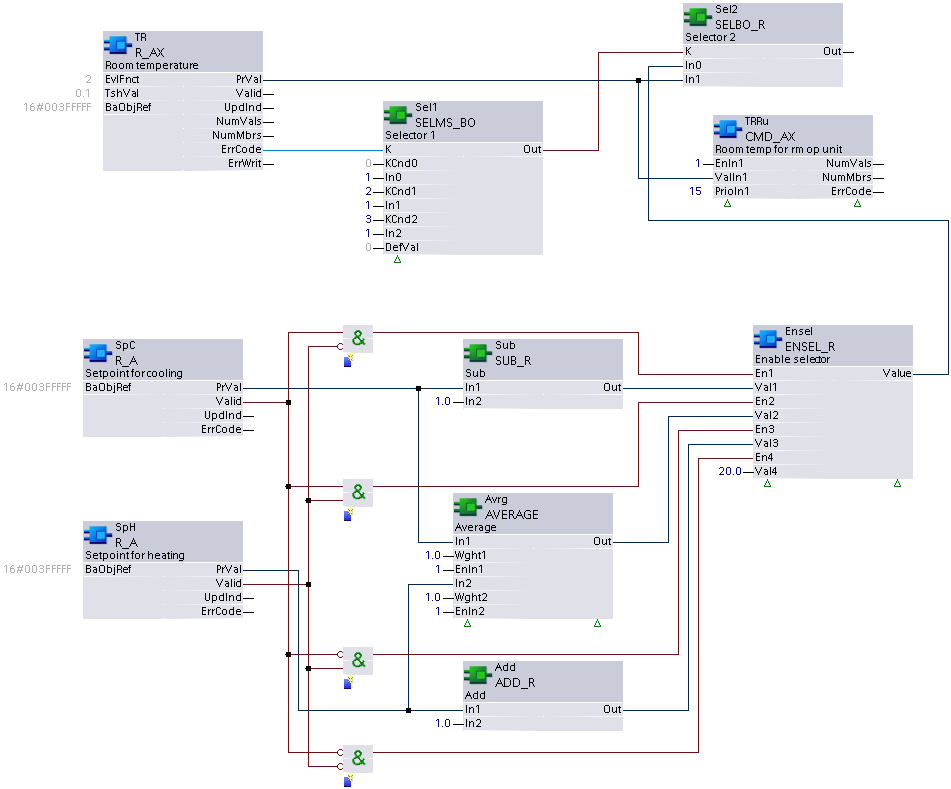

CMD_AX: Command multiple analog
CMD_AX commands Present value at a particular priority to multiple (up to 16) data points (or releases the priority). A Collection view node object is used to reference the data points. CMD_AX reads back the arbitrated Present value and Present priority properties to check if these values changed and if a re-command is necessary.
Compatible data points:
- Analog output [AO]
- Analog process value [APrcVal]
- Third party objects which contain the required properties and provide command arbitration
Refer to data point objects for a detailed description of the BACnet data points.
Required properties:
- Present value
- State flag
- Priority array
Optional properties:
- Present priority
- Reliability
Operate with priorities
The function block uses 2 approaches to control if operating with priorities:
1. Exclusive control (planned for priorities 1...5, 9...12, 14...16)
- Only one command source is permitted for a data point priority.
- A function block on a project can command this priority.
- An input set of a function block can command this priority.
- The function block commands the priority anew or releases it if a priority is used from a function block and another commanding source changes this priority.
2. Last win control (planned for priorities 7, 8, 13)
- Multiple, command sources can use the same priority.
- The last commanded value (release) remains on the priority until a new command is performed by one of the commanding sources.
| Exclusive control | Last win control |
|---|---|---|
Behavior at plant startup | [EnIn1] = 0 | [EnIn1] = 0 |
[EnIn1] = 1 | [EnIn1] = 1 | |
Command process | If [EnIn1] changes from 0 to 1. | If [EnIn1] changes from 0 to 1. |
If [EnIn1] = 1 and [ValIn1] changes. | If [EnIn1] = 1 and [ValIn1] changes. | |
If [EnIn1] = 1 and [RptcIn1] = 1. | If [EnIn1] = 1 and [RptcIn1] = 1. | |
Release | If [EnIn1] changes from 1 to 0. | If [EnIn1] changes from 1 to 0. |
If [EnIn1] = 0 and [RptcIn1] = 1. | If [EnIn1] = 0 and [RptcIn1] = 1. | |
Behavior in the event of commanding from another source | [EnIn1] = 0 | [EnIn1] = 0 |
[EnIn1] = 1 | [EnIn1] = 1 |
The data point periodically saves the value of priority 8 to controller memory. After a power outage, the value is restored in the property 'Priority array' and evaluated by the data point. All other priorities are not saved to controller memory.
Operation with other input sets of function block ([EnIn2]...[EnIn4], [ValIn2]...[ValIn4], [RptcIn2]...[RptcIn4]) is the same.
Pin description (inputs)
BaObjRef | |
|---|---|
BA-Object reference Structure [BaObjRef] defines a bound connection between XFB and BACnet object. The binding occurs automatically. Manual configuration attempts are not necessary and can result in system errors. | |
DeviceId | Device identifier Double word (default value: 16#3FFFFF) [DeviceId] comprises object type and object instance in a single identifier. It is used to identify device object: local or remote. Local device object could also be identified by value 16#3FFFFF. |
ObjectId | Object identifier Double word (default value: 16#3FFFFF) [ObjectId] comprises object type and object instance in a single identifier. It is used to identify object within a device. |
ItemId | Item identifier Integer (default value: -1) [ItemId] represents an item index in the functional view node object, which references the BACnet object. [ObjectId] and [ItemId] together define an indirect access reference to the BACnet object. Value -1 indicates that direct binding is used. |
TshVal |
|---|
Threshold value Real (default value: 0.1) A parameterized value used to control the XFB write attempts. An attempt is only allowed if the value difference is equal or greater than [TshVal]. Exception: the change equals a limit value such as 0.0 or 100.0 ([TshVal] is ignored). Note |
EnIn1...4 | |
|---|---|
Enable input 1 Boolean (default value: False) [EnIn1] controls whether [ValIn1] is commanded at the priority held by [PrioIn1] or if the priority is released. [EnIn1] belongs to one of four input sets, each containing [ValInX], [EnInX], [PrioInX] and [RptcInX]. These input sets command the data point(s) at different priorities as needed. [EnIn1] can be parameterized (set by developer), or it is linkable in the CFC chart and calculated by the control program during runtime. [EnIn2]...[EnIn4] functionality is identical to [EnIn1]. | |
1 (True) | The priority held by [PrioIn1] is commanded. |
0 (False) | The priority held by [PrioIn1] is released if it is not currently active by a different [EnInX] set to True. |
ValIn1...4 |
|---|
Value input 1 Real (default value: 0.0) The value to be commanded at [PrioIn1]. [ValIn1] can be parameterized (set by developer), or it is linkable in the CFC chart and calculated by the control program during runtime. [ValIn1] will be commanded at the priority held by [PrioIn1] if:
[ValIn2]...[ValIn4] functionality is identical to [ValIn1]. |
PrioIn1...4 | |
|---|---|
Priority input 1 Integer (default value: 17) [PrioIn1] belongs to one of four input sets. It holds the priority that accompanies [ValIn1]. [PrioIn1] is parameterized and cannot be changed during runtime. A value of 17 means the input set is not being used. [PrioIn2]...[PrioIn4] functionality is identical to [PrioIn1]. Note | |
Priority range | 1...16 See restrictions on priority 6 and priority 8 below. |
Exclusive control | Priorities 1...5, 9...12 and 14...16 On start-up the function block uses exclusive control to initialize any assigned priorities in ranges 1...5, 9...12 and 14...16. At runtime the function block continues to hold exclusive control. If an external overwrite is detected, the function block will re-command or re-release at the priority held by [PrioIn1]. Two or more input sets on the same function block must not share a common exclusive control priority, otherwise a conflict will result. |
Last wins | Priorities 7, 8 and 13
|
Priority 6 | Per BACnet, command priority 6 is reserved for minimum on/off functionality. Commands at priority 6 are rejected by the BACnet object. To provide minimum on/off functionality, the control program should contain the feature and command at another priority. |
Priority 8 | Per BACnet, command priority 8 is for manual operator use and is not typically assigned on the function block. Last wins functionality could allow the control program to change or release an operator command. |
RptcIn1...4 |
|---|
Repeat command input 1 Boolean (default value: False) [RptcIn1] forces the repetition of a command or the release a priority.
[RptcIn2]...[RptcIn4] functionality is identical to [RptcIn1]. Note [RptcIn1] is linkable and will typically be calculated and set by the control program. |
Pin description (outputs)
NumVals |
|---|
Number of valid values Integer (default value: 0) The number of valid present values which could be written errorless to the member objects. |
NumMbrs |
|---|
Number of aggregated members Integer (default value: 0) The total number of member objects in the collection view node object. |
ErrCode | |
|---|---|
Error code indication Integer (default value: 20) The status of the last performance of the XFB read operation. | |
= 0 | No error. |
> 0 | Error, see XFB error codes. |
ErrCmd | |
|---|---|
Error command Integer (default value: 20) The status of the last performance of the XFB command operation. | |
= 0 | No error. |
> 0 | Error, see XFB error codes. |
Use case examples
NOTICE

Note
Graphics reflect examples of XFB implementations; See ABT for current examples of CFC.
CMD_AX: Example taken from HVAC common function CHT{TR01}. Due to graphical size limitations, function blocks may be missing or shown more closely grouped than is typical.
